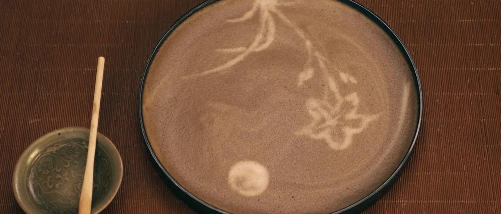
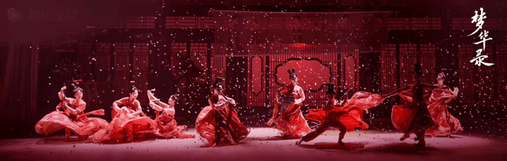

文化输出

电视剧《梦华录》中赵盼儿制作的茶百戏(拉花)
很多第一次知道茶百戏 的网友，都会惊呼“这不就是古代的咖啡拉花吗 其实，茶百戏和咖啡拉花有着本质上的区别。 咖啡拉花是将牛奶加入咖啡，通过不同颜色的叠加形成图案，而茶百戏只用清水在茶汤表面幻变图案。 所有我们祖先的茶百戏才是咖啡拉花的祖先。
剧中的舞蹈被指出抄袭《唐宫夜宴》,但如果仔细对比,这两组舞蹈没有任何联系,其实这只是还原宋代当时名乐歌姬时的场面,很是唯美震撼。

"花月宴的舞蹈"

《梦华录》中还原的宋代复杂的茶具吻合《茶具谱赞》上记载的宋代茶具
《梦华录》记载，宋代高档的茶坊插四时花，挂名人字画，“列花架，安顿奇松异桧等物于其上，装饰店面”。有些茶坊还会邀请艺人献艺，以招徕顾客。洪迈《夷坚志》载，乾道年间，吕德卿偕其友前往杭州，在“嘉会门外茶肆中坐，见幅纸用绯贴尾云：‘今晚讲汉书’”。这家茶坊不但有说书节目，还张贴出节目预告。 吴钩书中谈及，宋代平康诸坊的清乐茶坊、八仙茶坊、珠子茶坊、潘家茶坊、连三茶坊、连二茶坊，平日里都有歌妓迎客：“莫不靓妆迎门，争妍卖笑，朝歌暮弦，摇荡心目”。《梦华录》中，宋引章在茶馆弹琵琶，也吻合宋代的真实情况。
宋人吴自牧在其笔记《梦粱录》记载 “烧香点茶，挂画插花，四般闲事,不宜累家” 点出了宋代雅致生活的“四事”或“四艺” 而在《梦华录》里也一一体现
"花月宴的舞蹈"